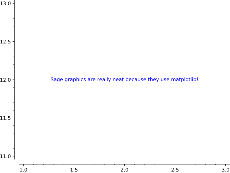
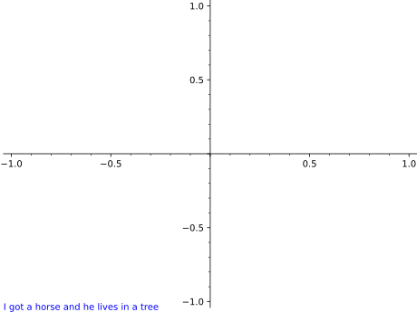
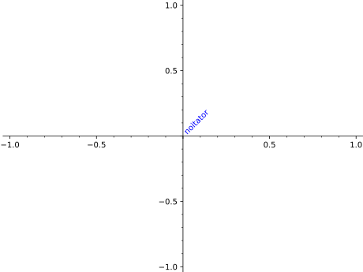

Return a 2D text graphics object at the point \((x, y)\).
Type text.options for a dictionary of options for 2D text.
2D OPTIONS:
fontsize - How big the text is. Either an integer that
specifies the size in points or a string which specifies a size (one of
‘xx-small’, ‘x-small’, ‘small’, ‘medium’, ‘large’, ‘x-large’, ‘xx-large’)
fontstyle - A string either ‘normal’, ‘italic’ or ‘oblique’
fontweight - A numeric value in the range 0-1000 or a string (one of
‘ultralight’, ‘light’, ‘normal’, ‘regular’, ‘book’,’ ‘medium’, ‘roman’,
‘semibold’, ‘demibold’, ‘demi’, ‘bold’, ‘heavy’, ‘extra bold’, ‘black’)
rgbcolor - The color as an RGB tuple
hue - The color given as a hue
alpha - A float (0.0 transparent through 1.0 opaque)
background_color - The background color
rotation - How to rotate the text: angle in degrees, vertical, horizontal
vertical_alignment - How to align vertically: top, center, bottom
horizontal_alignment - How to align horizontally: left, center, right
zorder - The layer level in which to draw
clip - (default: False) Whether to clip or not
axis_coords - (default: False) If True, use axis coordinates, so that
(0,0) is the lower left and (1,1) upper right, regardless of the x and y
range of plotted values.
bounding_box - A dictionary specifying a bounding box. Currently the text location.
EXAMPLES:
sage: text("Sage graphics are really neat because they use matplotlib!",(2,12))Graphics object consisting of 1 graphics primitive

Larger font, bold, colored red and transparent text:
sage: text("I had a dream!",(2,12),alpha=0.3,fontsize='large',fontweight='bold',color='red')Graphics object consisting of 1 graphics primitive
By setting horizontal_alignment to ‘left’ the text is guaranteed to be
in the lower left no matter what:
sage: text("I got a horse and he lives in a tree",(0,0),axis_coords=True,horizontal_alignment='left')Graphics object consisting of 1 graphics primitive

Various rotations:
sage: text("noitator",(0,0),rotation=45.0,horizontal_alignment='left',vertical_alignment='bottom')Graphics object consisting of 1 graphics primitive

sage: text("Sage is really neat!!",(0,0),rotation="vertical")Graphics object consisting of 1 graphics primitive
You can also align text differently:
sage: t1=text("Hello",(1,1),vertical_alignment="top")sage: t2=text("World",(1,0.5),horizontal_alignment="left")sage: t1+t2# render the sumGraphics object consisting of 2 graphics primitives
sage: text("So good",(0,0),bounding_box={'boxstyle':'round','fc':'w'})Graphics object consisting of 1 graphics primitive
The possible options of the bounding box are ‘boxstyle’ (one of ‘larrow’,
‘rarrow’, ‘round’, ‘round4’, ‘roundtooth’, ‘sawtooth’, ‘square’), ‘fc’ or
‘facecolor’, ‘ec’ or ‘edgecolor’, ‘ha’ or ‘horizontalalignment’, ‘va’ or
‘verticalalignment’, ‘lw’ or ‘linewidth’.
A text with a background color:
sage: text("So good",(-2,2),background_color='red')Graphics object consisting of 1 graphics primitive
Use dollar signs for LaTeX and raw strings to avoid having to
escape backslash characters: